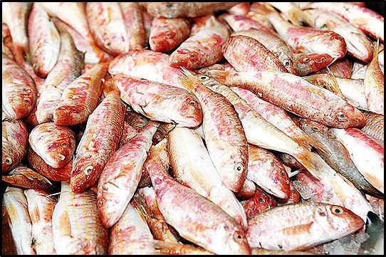
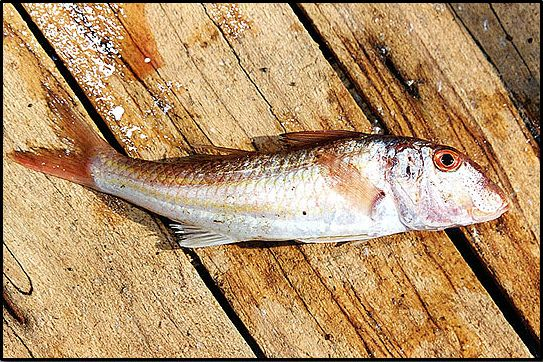

- Γλώσσα (Solea vulgaris)
Τη συναντάμε στους αμμώδεις βυθούς, σε βάθος από 10-60 μέτρα. Φτάνει τα 30-40 εκατ. και βάρος μέχρι 300 γρ. Τρέφεται με σκουλήκι, οστρακοειδή, και μικρά ψάρια, ενώ αναζητά την τροφή της την νύχτα. Την ημέρα παραμένει χωμένη μέσα στην άμμο όπου σέρνεται πάντοτε με το πλευρό.
- Μπαρμπούνι (mullus surmuletus)
Το μπαρμπούνι το συναντάμε σε μικρά κοπάδια σε πετρώδεις βυθούς, με βλάστηση και σε βάθος από 50-100 μέτρα, ενώ η κουτσομούρα (mullus burbutus) η οποία μοιάζει πολύ με το μπαρμπούνι αλλά διαφέρει από αυτό στο κοφτό μέτωπο, βρίσκεται σε λασπώδεις βυθούς, και σε βάθη μεγαλύτερα (150 - 300 μ.).
Το μπαρμπούνι, τρέφεται κυρίως με σκουλήκια τα οποία πιάνει σκαλίζοντας τον βυθό. Το μήκος του φθάνει τα 10 - 20 εκατ. και έχει πολύ νόστιμο κρέας.

